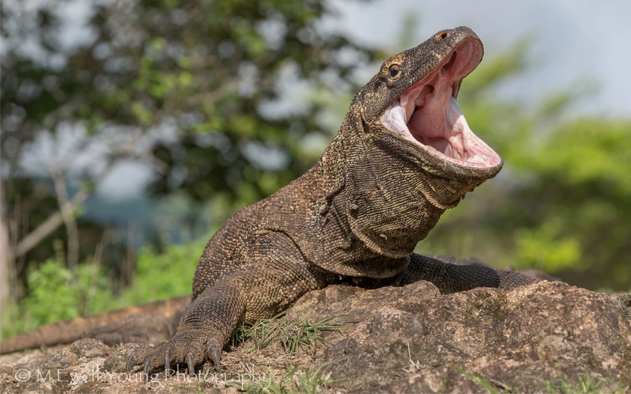

爬行动物 · 动物界
科莫多巨蜥 Varanus komodoensis

世界上体型最大的蜥蜴，体长可达 3 米，仅分布于印度尼西亚少数岛屿，口中有毒腺，能捕食鹿和野猪。
- 分类
- 门脊索动物门纲爬行纲目有鳞目科巨蜥科属巨蜥属
- 栖息环境
- 印度尼西亚小巽他群岛的干燥热带草原与季风林
- 地理分布
- 印度尼西亚科莫多岛、林卡岛及弗洛雷斯岛西部
- 保护级别
- IUCN 濒危（EN）；印度尼西亚国家保护动物；非中国原产
物种志
科莫多巨蜥体长可达 3 米，体重 70–90 kg，是现存最大的蜥蜴。它头大吻长，四肢粗壮，尾长而有力，全身覆盖灰褐色鳞片，皮肤布满颗粒状骨板；长舌分叉，能感知空气中的气味分子，靠敏锐嗅觉在远处找到腐肉。
它仅分布在印度尼西亚的科莫多、林卡、弗洛雷斯等少数岛屿，栖息于干燥的热带草原和季风林，晨间晒太阳升温后再行觅食，捕食鹿、野猪、水牛，也吃动物尸体。过去认为其唾液中的细菌致命，如今研究发现它下颌有毒腺。雌蜥每窝产卵约 15–25 枚，孵化期约 7–8 个月，幼蜥孵化后多爬到树上躲避成年个体的捕食。由于分布狭窄、栖息地受旅游开发影响，它被列为濒危物种。
形态与习性
- 食性鹿、野猪、水牛、猴，也取食动物尸体
- 体长2–3 m
- 体重约 70–90 kg
- 寿命野外约 30 年
- 繁殖卵生，每窝 15–25 枚，孵化期约 7–8 个月
- 活动节律昼行性，清晨晒太阳升高体温后觅食
- 毒性下颌毒腺分泌毒液，可致猎物血压下降、伤口出血不止
趣味知识
- 圈养雌性科莫多巨蜥可进行孤雌生殖，无雄性时也能产下可育后代。
- 它用分叉长舌收集空气中的气味分子，再送入上颚的雅各布森器辨味。
- 2009 年的研究证实其下颌有毒腺，颠覆了“口腔细菌致命”的旧观点。